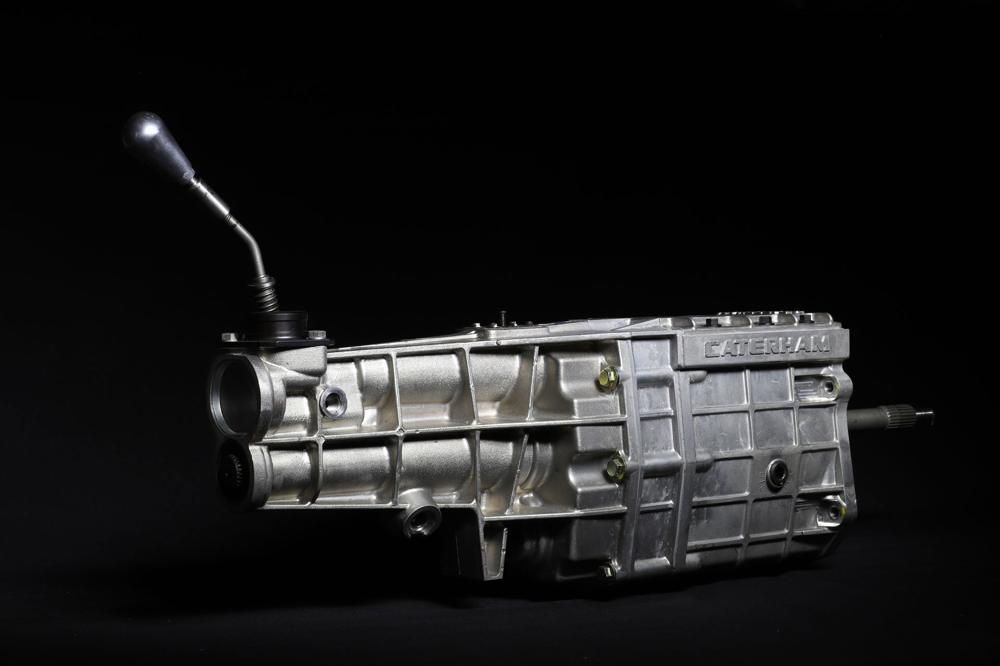
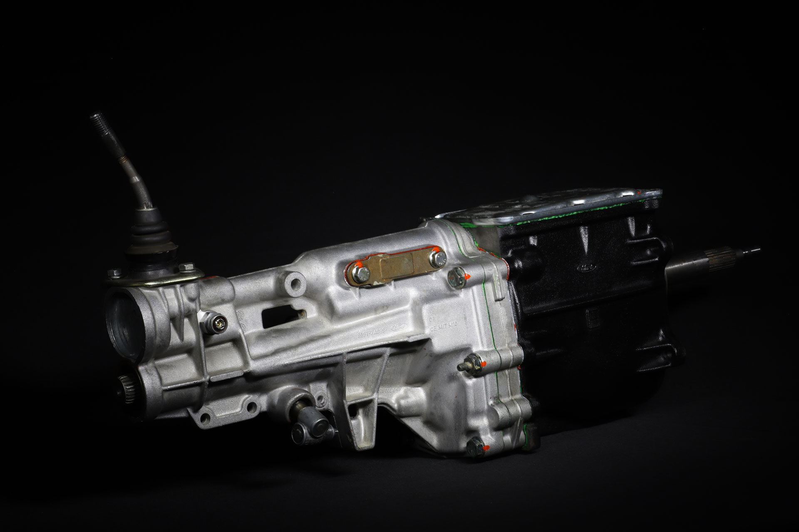

CAJA SECUENCIAL SADEV
La caja de cambios sequencial de la marca Sadev se puede montar en cualquier Caterham con motor
Ford Duratec sin necesidad de ningun adaptador y se puede seguir utilizando el eje cardan
original. Esta caja es una caja de altas prestaciones concebida para su uso en circuito,
siendo posible montarla con una palanca de cambios secuencial o un kit de levas en el volante
con deposito de aire comprimido adicional.
Contamos con la colaboracion de la empresa Geartronics la cual tiene mas de 20 años
de experiencia ajustando la electronica para este tipo de cajas de competicion.
PRECIO: 10500€

CAJA MANUAL ORIGINAL CATERHAM
Caja de cambios manual original Catheram con 6 marchas mas la marcha atras.
Esta caja fue desarrollada por Caterham basandose en la caja T de Ford que era la que
Caterham montaba a sus modelos en sus origenes.
Para montar esta caja no hace falta hace ninguna modificacion en la campana del embrague
Esta caja se puede montar en cualquier Caterham que traiga de fabrica una Ford T9, siendo
estos los Caterham con motor Rover Kseries, Opel C20XE y Ford Duratec.
PRECIO: 4750€

CAJA MANUAL FORD T9
Originalmente los primeros vehiculos del fabricante Caterham montaban una caja de origen
FORD. LA caja T9 de Ford tiene 5 marchas mas la marcha atras y es conocida por su robustez y
fiabilidad mas que constrastada sobretodo con los miticos Ford Escort Rally.
Es una caja manual clasica y perfecta para el conductor que busca el tacto mas puro y no
necesita una sexta marcha.